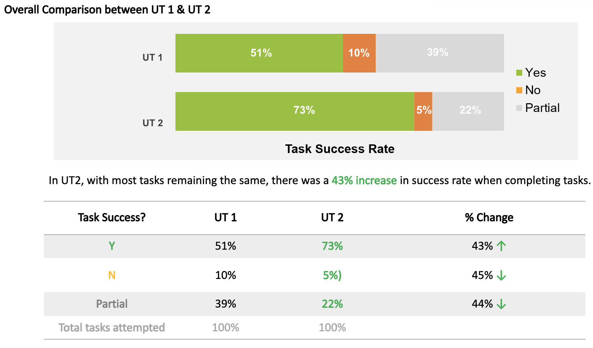

Credits
Banner Photo by Jess @ Harper Sunday from Pexels | Sakura Photo by Evie Shaffer from Pexels | Flower Bouquet Photo by sl wong from Pexels
Designed with Adobe XD and Illustrator, and developed by Tricia Teo.
Tools Used: Adobe XD
Methods Used: Usability Studies, Co-creation Workshop and Clickable Prototypes
No. Of Participants: 30
Role: Moderator/Workshop Facilitator
The system will be used for schools to keep track of students and teachers who are affected by contagious diseases happening around campus. This will allow the headquarters to determine if further actions needs to be taken (e.g. to close down schools or to take extra precaution of students travelling to affected countries).
Currently, schools are keeping track of affected cases through documents such as excel sheets and google documents, as well as writing information down onto whiteboards, before compiling and reporting the information to the headquarters. This process is cumbersome and inefficient as information are not regularly shared.
The goal of this system is to streamline the process for schools and at the same time, allow the headquarter to make quicker judgment based on information submitted.
Firstly, I had to gather further requirements from the client to understand the need and usage of the system, so as to ensure that our design matches their requirements.
Secondly, with the requirements, I sketched wireframes to include all necessary fields that should reside within the system.
Thirdly, once the information have been verified by the clients, I proceeded to design the system with UI elements as the main focus (transformed into High-Fidelity wireframes).
Lastly, I conducted 2 rounds of usability testing with the users of the system and presented findings to the clients.
In order to validate our designs to identify usability issues and gaps in the requirements, we have interviewed 10 participants from 5 schools for the first phase of Usability Testing - utilising Clickable Prototypes.
As a moderator, I had the duty to brief the participants on how the sessions will be conducted:
After interviewing the participants in a span of 2 weeks, the observer and I analysed the information gathered and identified common usability issues for enhancements. We followed a matrix that will help us verify if our enhancements made to the designs were more user-friendly:
After which, we conducted the second phase of Usability Testing with the same schools, but with a fresh batch of participants who have yet to see the prototype, so as to achieve a more accurate result.v
Instead of performing Usability Testing for a selected persona, the team felt that conducting a co-designing workshop would allow us to gather more insightful feedback as there are many users from various departments involved and their requirements have not been firmed up.
Based on our understanding of what these users wants, the team has taken the initiative to piece together the processes onto wireframes. With over 15 users involved, we split them up into 3 groups - each group paired with a Facilitator and an Observer.
We pasted the wireframes up onto the walls and provided tools for the users such as sticky notes, markers, papers etc.
The colours of the sticky notes represented the different needs of our users:
Based on the matrix mentioned earlier on, we compiled the results from both rounds of Usability Testing session and have discovered that the enhancements made to the designs had resulted in a 43% increase in success rate.
 (Usability Testing Results)
Credits
Banner Photo by Jess @ Harper Sunday from Pexels | Sakura Photo by Evie Shaffer from Pexels | Flower Bouquet Photo by sl wong from Pexels
Designed with Adobe XD and Illustrator, and developed by Tricia Teo.